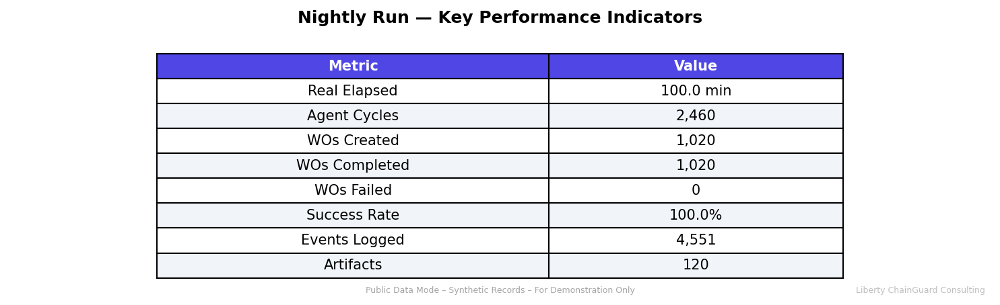
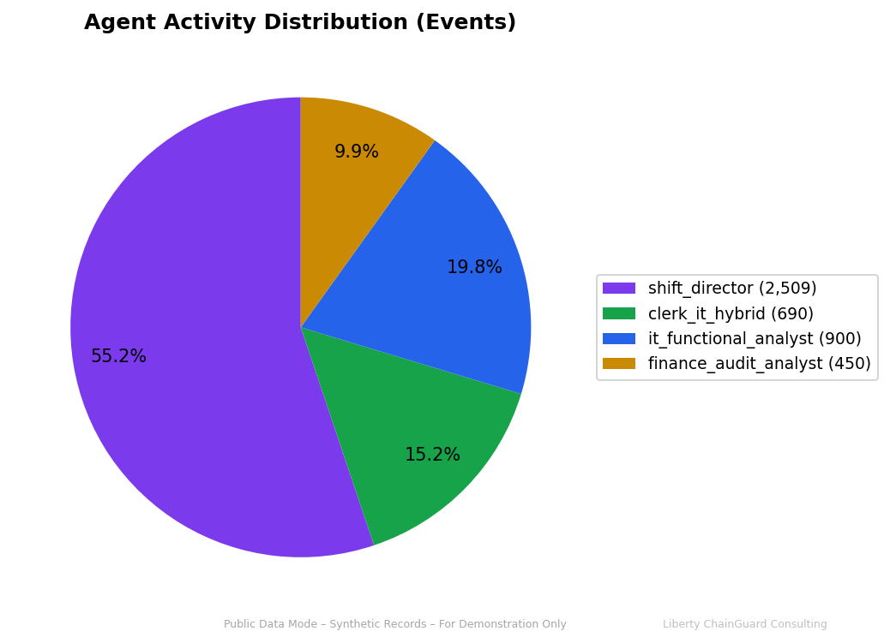
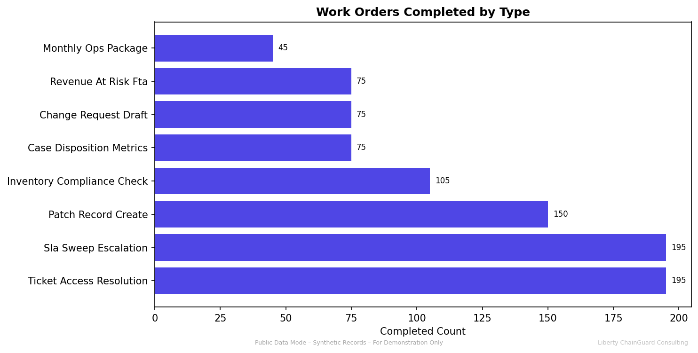
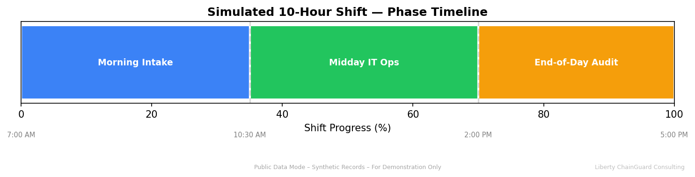

Full 10-hour municipal court shift simulated at 6× speed using the Corpus Christi public data profile. Four concurrent agents processed 1,020 work orders across three phases with zero failures, generating 120 reporting artifacts.
| Component | Version | Method |
|---|---|---|
| Ubuntu | 24.04.4 LTS (Noble) | Base OS |
| Docker CE | 28.5.2 | apt (docker.com) |
| Python | 3.11.14 | deadsnakes PPA |
| Node.js | v20.20.0 | nvm |
| PostgreSQL | 15 | Docker image |
| Redis | 7 | Docker image |
| FastAPI | 0.115.0 | pip (requirements.txt) |
| Next.js | 14.2.5 | npm (package.json) |
| SQLAlchemy | 2.0.31 | pip |
| ReportLab | 4.2.2 | pip |
Python packages: 60+ (full list in docs/evidence/pip_freeze.txt)
Node packages: 390 (full list in docs/evidence/npm_ls_depth0.txt)
| Check | Endpoint | Status |
|---|---|---|
| Backend health | GET /health | ✅ 200 OK |
| Sim clock | GET /ops/clock | ✅ 200 OK |
| KPIs | GET /work-orders/kpis | ✅ 200 OK |
| Cases (no auth) | GET /cases/summary | ✅ 200 OK |
| Frontend | GET :3000 | ✅ 200 OK |
| PostgreSQL | Docker courtops-db | ✅ Running |
| Redis | Docker courtops-redis | ✅ Running |
| Test | Module | Result |
|---|---|---|
| test_detect_repeated_failed_logins_flags_burst | audit_anomalies | ✅ PASSED |
| test_detect_repeated_failed_logins_ignores_sparse | audit_anomalies | ✅ PASSED |
| test_time_to_disposition | case_time_to_disposition | ✅ PASSED |
| test_seed_determinism | seed_determinism | ✅ PASSED |
| test_ticket_sla_due_date | sla_calculation | ✅ PASSED |
| test_sse_event_keys | sse_events | ✅ PASSED |
| test_queue_routing_completeness | work_order_dispatch | ✅ PASSED |
| test_clerk_ops_routing | work_order_dispatch | ✅ PASSED |
| test_it_ops_routing | work_order_dispatch | ✅ PASSED |
| test_finance_audit_routing | work_order_dispatch | ✅ PASSED |




| Agent | Events | Share | Primary Tasks |
|---|---|---|---|
| Shift Director | 2,509 | 55.1% | KPI monitoring, phase dispatch, WO re-dispatch |
| IT Functional Analyst | 900 | 19.8% | SLA sweeps (195), patches (150), inventory (105) |
| Clerk + IT Hybrid | 690 | 15.2% | Tickets (195), case metrics (75), change reqs (75) |
| Finance & Audit | 450 | 9.9% | Revenue-at-risk (75), monthly pkg (45), audit (105) |
| Artifact | Type | Location |
|---|---|---|
| Monthly Operations Report | reports/2026-02/monthly_operations_2026-02.pdf | |
| Revenue at Risk (FTA) | reports/2026-02/revenue_at_risk_fta.pdf | |
| Audit Report | TXT | reports/2026-02/audit_report.txt |
| Simulation Event Log | JSONL | sim_logs/shift_log_*.jsonl (4,551 lines, 1.5 MB) |
| Simulation Summary | JSON | sim_logs/shift_summary_*.json |
| Python SBOM | CycloneDX JSON | docs/evidence/sbom/python_sbom.json |
| Node SBOM | CycloneDX JSON | docs/evidence/sbom/node_sbom.json |
./scripts/cloud_shift_demo.sh 20260225 30
sudo docker start courtops-db courtops-redis cd backend && source venv/bin/activate POSTGRES_HOST=localhost REDIS_URL=redis://localhost:6379/0 uvicorn app.main:app --port 8000 --reload & curl -X POST "http://localhost:8000/admin/seed?profile=corpus_christi&scenario=municipal_shift&seed=20260225&reset=true" cd ../frontend && NEXT_PUBLIC_API_BASE_URL=http://localhost:8000 npm run dev & curl -X POST "http://localhost:8000/admin/sim/start?speed=6&seed=20260225" open http://localhost:3000/ops?tour=1
| Appendix | File | Description |
|---|---|---|
| A | docs/evidence/system_info.txt | OS, kernel, disk, memory |
| B | docs/evidence/tooling.txt | Docker, Python, Node versions |
| C | docs/evidence/containers.txt | Docker container status + image digests |
| D | docs/evidence/sbom/python_sbom.json | Python CycloneDX SBOM |
| E | docs/evidence/sbom/node_sbom.json | Node CycloneDX SBOM |
| F | docs/evidence/pip_freeze.txt | Complete Python package list |
| G | docs/evidence/npm_ls_depth0.txt | Complete Node package list |
| H | docs/evidence/pytest_results.txt | Full pytest output |
| I | docs/evidence/eslint_results.txt | ESLint output |
| J | docs/evidence/app_health.txt | Endpoint health check responses |
| K | docs/evidence/git_info.txt | Git HEAD, log, diff stats |
| L | docs/evidence/run_metrics.json | Complete nightly run metrics |